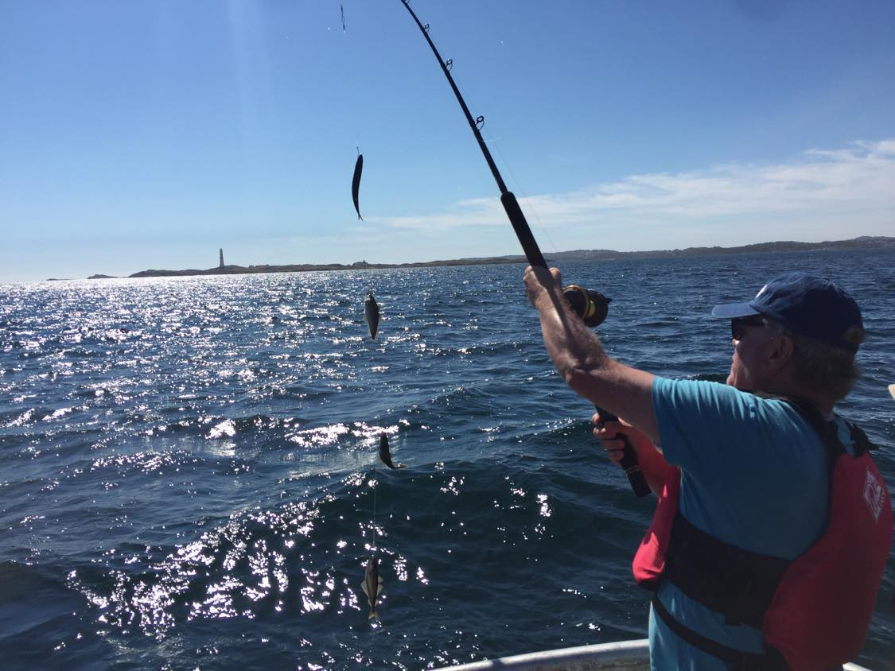
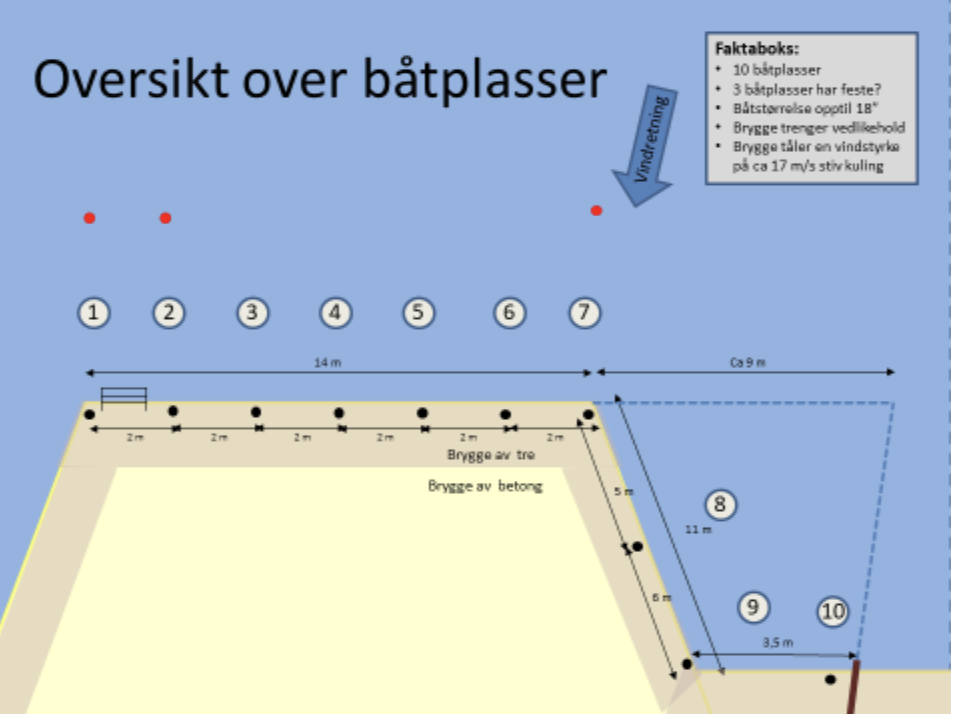

Om Hytta
Denne fritidsboligen er bygget på Noderget i Skålvik på Flekkerøya rett utenfor Kristiansand. Fritidsboligen er lokalisert på et fantastisk sted med panorama utsikt over sjøen og båtforbindelse til Kristiansand sentrum. Det er kjørevei frem til hytta, med 2 parkeringsplasser og en båtplass. Det er kort vei til butikk, og 20 min kjøring til Kristiansand sentrum.

1.Etasje
- Stor åpen stue med TV, gass-peis – stort åpent kjøkken – og utgang til ute-terrasse
- Et stort soverom med dobbel-seng
- Bad med toalett & dusj
Det finnes også 3 boder:
- Bod for vaskerom og kjøleskap
- Teknisk bod
- Vin-rom (ikke tilgjengelig for gjester)
2.etasje
- Stue med gass-peis og utgang til terrasse
- To store soverom med dobbeltsenger
- Stort bad toalett og dusj
- Stort gjesterom/ soverom med eget bad/ dusj/ badekar
- Walk-in closed – ikke tilgjenglig for gjester
Utvendig
Utebod mot parkeringsplassen er benyttet til oppbevaring av gasspeis og utestoler/ putevarer. Utebod mot sjøen er benyttet til fiskeutstyr og hageting. Fiskeutstyret kan benyttes hvis ønskelig. Tomten grenser til et flott offentlig badested som kan benyttes. Andre fastboende og hyttegjester benytter seg også av samme badested. Det er flotte bademuligheter med dypt vann rett ved fjellet. HUSK å ta inn underlag, puter og madrasser inn hver kveld etter bruk – pga eventuelt regn eller vind.
Bademuligheter
Det er et utrolig fint badested 20 meter fra hytta. Dette er ikke privat, men pleier ikke å være travelt. Her er det perfekt å nyte varme sommerdager eller ta seg et forfriskende bad.


Båt- og fiskemuligheter
Det er mye fisk rundt Flekkerøya, spesielt er det lett å få makrell, torsk, sei og lyr. Det kan fiskes både fra land eller i båt. Komplett fiskeutstyr finnes i fritidsboligen.
Hytta disponerer egen båtplass som kan benyttes. Ta kontakt hvis dette er ønskelig. Båt er ikke tilgjengelig. Ved leie av ekstern båt – så må denne båten være under 20 fot for å få plass på båtplassen. På tegningen under så vises de ulike båtplassene på brygga, og Hytta disponerer båtplass nr 1. Det er viktig at andre båter og kajakker ikke må benyttes/ rører – da disse er eiet av andre hytter.
 Uteområdene
Det er flotte uteområder rundt hytta, men tilgang til gode solrike sitteplasser, med pergola og gasspeis, flotte terrasser og gressplen. Det er også to uteboder.


Parkeringsplassen
Fritidsboligen disponerer 2 parkeringsplasser i en privat parkeringsplass rett ved fritidsboligen. Parkere så nære trappen til fritidsboligen som mulig.